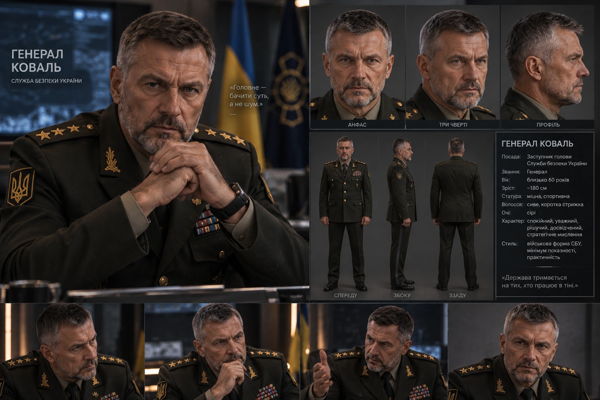

ОСНОВНА ІНФОРМАЦІЯ
Досвід, витримка й увага до деталей
Андрій Іванович Коваль — генерал і заступник голови Служби безпеки України. Він належить до кола керівників, які працюють із питаннями державної безпеки та координації складних операцій.
Повне ім’я: Андрій Іванович Коваль
Звання: генерал
Посада: заступник голови СБУ
Вік: близько 60 років
Зріст: близько 180 см
Статура: міцна, спортивна
Зовнішність: коротке сиве волосся, сірі очі
Характер: спокійний, уважний, вимогливий, досвідчений, стратегічно мислить
ХАРАКТЕР І ПРИНЦИПИ
Говорить мало, помічає багато
Коваль не прагне привертати увагу гучними заявами. Він зосереджений, стриманий і вимогливий, цінує професіоналізм та результат. Його авторитет ґрунтується на досвіді, уважності й здатності бачити ширшу картину.
«Головне — бачити суть, а не шум.»
РОЛЬ У СЮЖЕТІ
Представник служби безпеки держави
У межах своєї посади Коваль долучається до обговорення питань державної безпеки, оцінювання ризиків і координації дій. Конкретні епізоди та рішення персонажа доповнюватимуться відповідно до рукопису, без приписування йому непідтверджених подій.
Візуальний канон
Основний образ поєднує два авторські варіанти однієї людини. Коваль носить стриману форму СБУ з українською символікою, має коротке сиве волосся, сірі очі та міцну статуру.